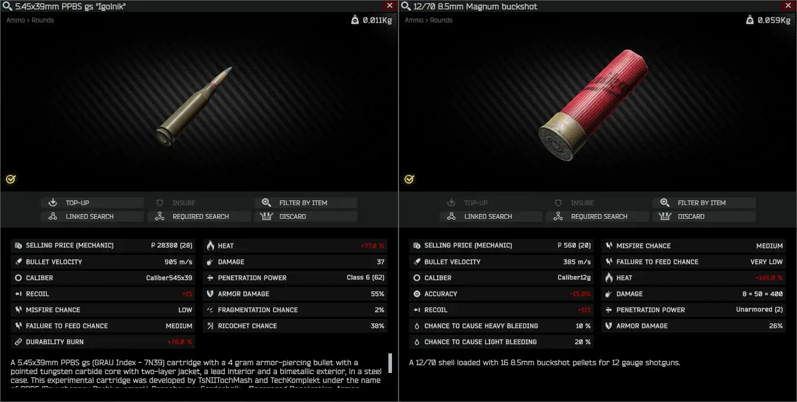
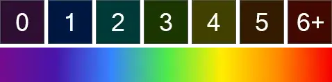
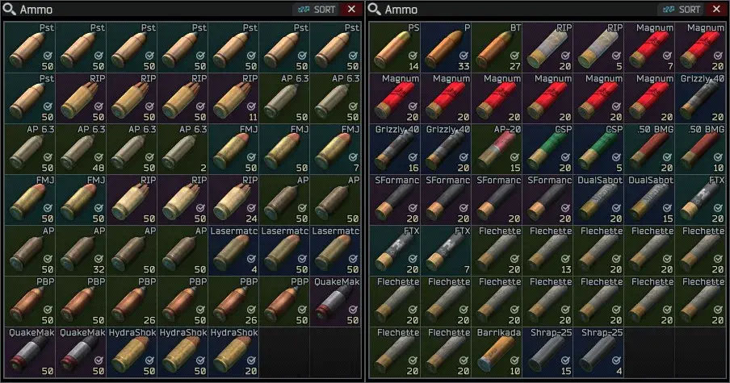
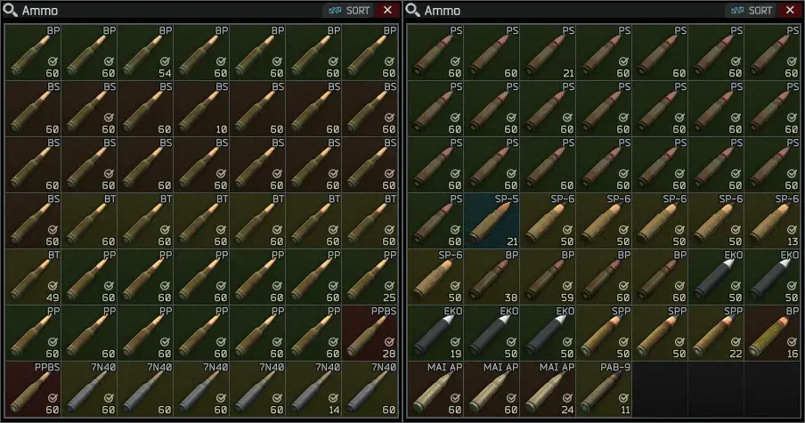
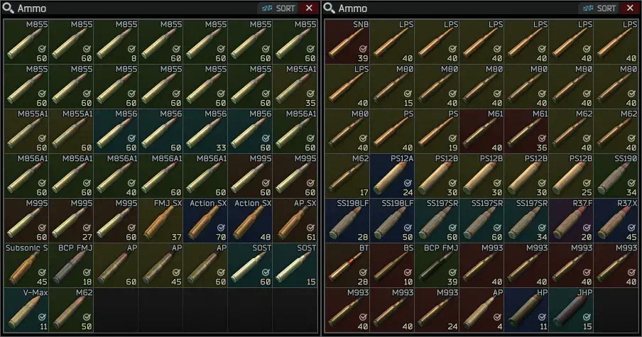

Munitions Expert (Reboot)
- Downloads
- 42,086
- Favourites
- 43
- Mod lists
- 70
Installation:
Extract the ZIP to your SPT-AKI installation folder.
Note: You must delete Faupi’s Munitions Expert, as it will directly conflict with this mod.
Description:
This mod started as a fork of Faupi’s Munitions Expert and then rewritten as exclusively a client-side mod.
It adds additional attributes revealing the hidden stats of all types of ammo:

Optionally, the background colors are replaced with custom colors (not included with the base game) according to penetration power value, and are based on the visible light spectrum (reversed, because it looks better)*:

* The colors can be customized from the mod’s settings.
* In most cases, low penetration means high flesh damage, while high penetration means low flesh damage, but there are a few exceptions where there’s both high penetration and high flesh damage (rare end-game ammo).
And here’s a preview:



Version
1.7.0
Compiled for client version 0.16.9.0.40087
Version
1.6.0
Compiled for client version 0.16.1.3.35392
Version
1.5.0
Compiled for client version 0.15.5.1.33420